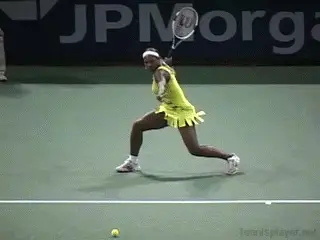
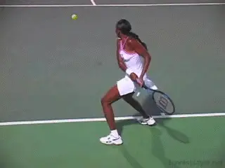
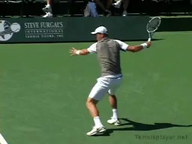

The Counter Attacking Contact Moves¶
The Counter Attacking\ Contact Moves
David Bailey

The Two Foot and the One Foot Pivot: the two predominant counterattacking Contact Moves.
In the last two articles, we looked at Contact Moves used for attacking, (link) and Contact Moves used for building points. (link) Now let's move on to a third category: Counter Attacking.
Counter attacking means answering a forcing shot with a forcing shot of your own.
There are two Contact Move variations for counterattack.
These are the One Foot Pivot and the Two Foot Pivot. These counterattacking moves are executed with one or both feet on the court. Rather than exploding upward into the air, the player stays lower and rotates through the swing.
As we have seen in other articles, it's important to understand that a Contact Move has many components. The movement of the feet before during and after the hit is all critical, varied and at times complex.
This is nowhere more true than with counterattacking moves, as we'll see. After the hitting stance is established, there is substantial movement in both the feet and the legs, as well as changes in the angles of the knees.
Players usually use Pivot Moves on relatively low, hard hit balls, and also, when they are hitting half volleys or hitting the ball on the rise. Typically, this is when they are around the baseline and are forced at least somewhat by time.
The goal in both the one Foot and Two Foot Pivot is the same: to reply to an attacking shot by controlling the contact height and giving the opponent a difficult ball. This could be a ball that forces the opponent on time. Or a heavily spun ball that bounces above shoulder level. Or a hard hit flatter ball, often hit directly at the body.

In the women's game players use the two foot pivot on both the forehand and the two handed backhand.
Two Foot Pivot
The Two Foot Pivot can be used on both the forehand and the two-handed backhand. Although you occasionally see a two foot pivot in men's tennis, it is far more common in the woman's game since the ball is not as consistently high or heavy.
The preparation or the turn move can be a small step or a pivoting rotation with both feet turning sideways from the split step. Usually the two foot pivot is hit with an extreme open stance, as there is not time to further adjust the feet.
As the player swings, both feet pivot or rotate through the forward swing. This rotation of the feet is synchronized with the rotation of the body.
On the forehand, the hitting shoulder can rotate forward so that it ends up facing the opponent at the completion of the followthrough. Rather than block the movement of the torso, the pivoting allows the player to swing with a full rotational pattern.
Players who don't allow their feet to pivot in this fashion can limit their body rotation. They may also increase the risk of joint injury when the body twists against the feet if they are locked in a stationary position on the court.
In the two foot pivot the player stays low with the knees bent at up 45 degrees angle or sometimes even more. During the swing, the legs uncoil and partially straighten. But during the followthrough the player drops the knees down again for balance.

In the men's game the One Foot Pivot is the more common counterattacking Contact Move.
One Foot Pivot
In the men's game, the Two Foot Pivot is rare and the One Foot Pivot is much more common. Typically the ball is coming up too high and fast to hit with both feet on the ground.
On these balls, the players keep one foot--the outside foot or the foot closer to the ball--on the court and pivot on it through the shot. The opposite leg and the opposite foot come upwards into the air often with a pronounced knee bend. This increased elevation allows players to deal with a higher contact point without having to go completely airborne.
The One Foot Pivot is most commonly hit from a semi-open stance. But it can also be hit from a more fully open stance like the two foot variation.
As the player starts the forward swing, the left or opposite foot comes off the court with the knee bend reaching up to 45 degrees. Depending on the ball, the feet can pivot until they face the net, or continue further until they point at the opposite sideline.
Two-Handed Backhand
Although it is more much more common on the forehand, you will also see the One Foot Pivot used on the two-handed backhand. Again it's typically when the ball is hit hard, deep and not especially high.

Although rarer, you see the One Foot Pivot on the two-hander at times.
The players typically use the one foot pivot when they are hitting open stance, but it is rarer since most two handers, especially on the men's side, are hit with closed stances.
But when using a one foot backhand pivot, the sequence is similar to the forehand. The player sets up in a semi open stance. As the swing starts, the player lifts the front leg off the court, bending at the knee.
As with the forehand, this allows the player to raise the contact point without having to completely leave the court. The rear foot then pivots through the shot after the contact, corresponding to the rotation of the shoulders and hips.
Because the amount of torso rotation on the two-hander is less on the forward swing compared to the forehand, the rotation of the outside foot is usually also less. Typically, the outside foot will rotate 90 degrees, or until it points forward at the net.
So that's it for our third category: the Counter Attacking Moves. Stay tuned for the Defensive Contact Moves!

David Bailey is a native Australian who has spent 15 years studying tennis at the professional level. He has developed a new language for one of the most complex and misunderstood aspects of the game, footwork and court movement. David has worked with world class players and coaches, national tennis associations and top academies, and has presented at coaching seminars around the world. His teaching system, the Bailey Method, has become a regular part of the coaching curriculum at the Nick Bollettierri Tennis Academy, where it is personally endorsed by Nick
Visit David's Website! [!]
To Contact David directly [!]